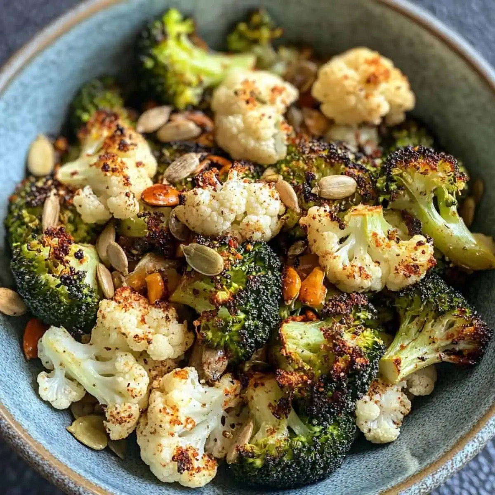

My Favourite:
Air-Fried Broccoli and Cauliflower Salad
25 minPrep 5 min · Soak 5–10 min · Air fry 10–12 min
- Boil water in a kettle, then pour it over your broccoli and cauliflower until submerged for 5–10 mins.
- Preheat the air fryer to 200 degrees.
- Drain the florets, then pat them quickly with a kitchen towel to remove excess moisture.
- Air fry for 10–12 minutes or until lightly coloured. I like mine a little charred.
- Sprinkle a little salt. That's it.
- Optional: Add seeds of your choice - I like sesame or sunflower seeds. Enjoy with mustard or just as it is.